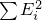

Containers are objects that store other objects. They control allocation and deallocation of these objects through constructors, destructors, insert and erase operations.
All of the complexity requirements in this Clause are stated solely in terms of the number of operations on the contained objects. [ Example: The copy constructor of type vector<vector<int>> has linear complexity, even though the complexity of copying each contained vector<int> is itself linear. — end example ]
For the components affected by this subclause that declare an allocator_type, objects stored in these components shall be constructed using the allocator_traits<allocator_type>::rebind_traits<U>::construct function and destroyed using the allocator_traits<allocator_type>::rebind_traits<U>::destroy function ([allocator.traits.members]), where U is either allocator_type::value_type or an internal type used by the container. These functions are called only for the container's element type, not for internal types used by the container. [ Note: This means, for example, that a node-based container might need to construct nodes containing aligned buffers and call construct to place the element into the buffer. — end note ]
In Tables [tab:containers.container.requirements], [tab:containers.reversible.requirements], and [tab:containers.optional.operations] X denotes a container class containing objects of type T, a and b denote values of type X, u denotes an identifier, r denotes a non-const value of type X, and rv denotes a non-const rvalue of type X.
| Expression | Return type | Operational | Assertion/note | Complexity |
| semantics | pre-/post-condition | |||
| X::value_type | T | Requires: T is Erasable from X (see [container.requirements.general], below) | compile time | |
| X::reference | T& | compile time | ||
| X::const_reference | const T& | compile time | ||
| X::iterator | iterator type whose value type is T | any iterator category that meets the forward iterator requirements. convertible to X::const_iterator. | compile time | |
| X::const_iterator | constant iterator type whose value type is T | any iterator category that meets the forward iterator requirements. | compile time | |
| X::difference_type | signed integer type | is identical to the difference type of X::iterator and X::const_iterator | compile time | |
| X::size_type | unsigned integer type | size_type can represent any non-negative value of difference_type | compile time | |
| X u; | post: u.empty() | constant | ||
| X() | post: X().empty() | constant | ||
| X(a) |
Requires: T is CopyInsertable
into X (see below). post: a == X(a). | linear | ||
| X u(a) X u = a; |
Requires: T is CopyInsertable
into X (see below). post: u == a | linear | ||
| X u(rv) X u = rv | post: u shall be equal to the value that rv had before this construction | (Note B) | ||
| a = rv | X& | All existing elements of a are either move assigned to or destroyed | a shall be equal to the value that rv had before this assignment | linear |
| (&a)->~X() | void | the destructor is applied to every element of a; any memory obtained is deallocated. | linear | |
| a.begin() | iterator; const_iterator for constant a | constant | ||
| a.end() | iterator; const_iterator for constant a | constant | ||
| a.cbegin() | const_iterator | const_cast<X const&>(a).begin(); | constant | |
| a.cend() | const_iterator | const_cast<X const&>(a).end(); | constant | |
| a == b | convertible to bool | == is an equivalence relation. equal(a.begin(), a.end(), b.begin(), b.end()) | Requires: T is EqualityComparable | Constant if a.size() != b.size(), linear otherwise |
| a != b | convertible to bool | Equivalent to !(a == b) | linear | |
| a.swap(b) | void | exchanges the contents of a and b | (Note A) | |
| swap(a, b) | void | a.swap(b) | (Note A) | |
| r = a | X& | post: r == a. | linear | |
| a.size() | size_type | distance(a.begin(), a.end()) | constant | |
| a.max_size() | size_type | distance(begin(), end()) for the largest possible container | constant | |
| a.empty() | convertible to bool | a.begin() == a.end() | constant |
Notes: the algorithm equal() is defined in Clause [algorithms]. Those entries marked “(Note A)” or “(Note B)” have linear complexity for array and have constant complexity for all other standard containers.
The member function size() returns the number of elements in the container. The number of elements is defined by the rules of constructors, inserts, and erases.
begin() returns an iterator referring to the first element in the container. end() returns an iterator which is the past-the-end value for the container. If the container is empty, then begin() == end();
In the expressions
i == j i != j i < j i <= j i >= j i > j i - j
where i and j denote objects of a container's iterator type, either or both may be replaced by an object of the container's const_iterator type referring to the same element with no change in semantics.
Unless otherwise specified, all containers defined in this clause obtain memory using an allocator (see [allocator.requirements]). Copy constructors for these container types obtain an allocator by calling allocator_traits<allocator_type>::select_on_container_copy_construction on the allocator belonging to the container being copied. Move constructors obtain an allocator by move construction from the allocator belonging to the container being moved. Such move construction of the allocator shall not exit via an exception. All other constructors for these container types take a const allocator_type& argument. [ Note: If an invocation of a constructor uses the default value of an optional allocator argument, then the Allocator type must support value initialization. — end note ] A copy of this allocator is used for any memory allocation and element construction performed, by these constructors and by all member functions, during the lifetime of each container object or until the allocator is replaced. The allocator may be replaced only via assignment or swap(). Allocator replacement is performed by copy assignment, move assignment, or swapping of the allocator only if allocator_traits<allocator_type>::propagate_on_container_copy_assignment::value, allocator_traits<allocator_type>::propagate_on_container_move_assignment::value, or allocator_traits<allocator_type>::propagate_on_container_swap::value is true within the implementation of the corresponding container operation. In all container types defined in this Clause, the member get_allocator() returns a copy of the allocator used to construct the container or, if that allocator has been replaced, a copy of the most recent replacement.
The expression a.swap(b), for containers a and b of a standard container type other than array, shall exchange the values of a and b without invoking any move, copy, or swap operations on the individual container elements. Lvalues of any Compare, Pred, or Hash types belonging to a and b shall be swappable and shall be exchanged by calling swap as described in [swappable.requirements]. If allocator_traits<allocator_type>::propagate_on_container_swap::value is true, then lvalues of type allocator_type shall be swappable and the allocators of a and b shall also be exchanged by calling swap as described in [swappable.requirements]. Otherwise, the allocators shall not be swapped, and the behavior is undefined unless a.get_allocator() == b.get_allocator(). Every iterator referring to an element in one container before the swap shall refer to the same element in the other container after the swap. It is unspecified whether an iterator with value a.end() before the swap will have value b.end() after the swap.
If the iterator type of a container belongs to the bidirectional or random access iterator categories ([iterator.requirements]), the container is called reversible and satisfies the additional requirements in Table [tab:containers.reversible.requirements].
| Expression | Return type | Assertion/note | Complexity |
| pre-/post-condition | |||
| X::reverse_iterator | iterator type whose value type is T | reverse_iterator<iterator> | compile time |
| X::const_reverse_iterator | constant iterator type whose value type is T | reverse_iterator<const_iterator> | compile time |
| a.rbegin() | reverse_iterator; const_reverse_iterator for constant a | reverse_iterator(end()) | constant |
| a.rend() | reverse_iterator; const_reverse_iterator for constant a | reverse_iterator(begin()) | constant |
| a.crbegin() | const_reverse_iterator | const_cast<X const&>(a).rbegin() | constant |
| a.crend() | const_reverse_iterator | const_cast<X const&>(a).rend() | constant |
Unless otherwise specified (see [associative.reqmts.except], [unord.req.except], [deque.modifiers], and [vector.modifiers]) all container types defined in this Clause meet the following additional requirements:
if an exception is thrown by an insert() or emplace() function while inserting a single element, that function has no effects.
if an exception is thrown by a push_back(), push_front(), emplace_back(), or emplace_front() function, that function has no effects.
no erase(), clear(), pop_back() or pop_front() function throws an exception.
no copy constructor or assignment operator of a returned iterator throws an exception.
no swap() function throws an exception.
no swap() function invalidates any references, pointers, or iterators referring to the elements of the containers being swapped. [ Note: The end() iterator does not refer to any element, so it may be invalidated. — end note ]
Unless otherwise specified (either explicitly or by defining a function in terms of other functions), invoking a container member function or passing a container as an argument to a library function shall not invalidate iterators to, or change the values of, objects within that container.
A contiguous container is a container that supports random access iterators ([random.access.iterators]) and whose member types iterator and const_iterator are contiguous iterators ([iterator.requirements.general]).
Table [tab:containers.optional.operations] lists operations that are provided for some types of containers but not others. Those containers for which the listed operations are provided shall implement the semantics described in Table [tab:containers.optional.operations] unless otherwise stated.
| Expression | Return type | Operational | Assertion/note | Complexity |
| semantics | pre-/post-condition | |||
| a < b | convertible to bool | lexicographical_compare( a.begin(), a.end(), b.begin(), b.end()) | pre: < is defined for values of T. < is a total ordering relationship. | linear |
| a > b | convertible to bool | b < a | linear | |
| a <= b | convertible to bool | !(a > b) | linear | |
| a >= b | convertible to bool | !(a < b) | linear |
[ Note: The algorithm lexicographical_compare() is defined in Clause [algorithms]. — end note ]
All of the containers defined in this Clause and in ([basic.string]) except array meet the additional requirements of an allocator-aware container, as described in Table [tab:containers.allocatoraware].
Given an allocator type A and given a container type X having a value_type identical to T and an allocator_type identical to allocator_traits<A>::rebind_alloc<T> and given an lvalue m of type A, a pointer p of type T*, an expression v of type (possibly const) T, and an rvalue rv of type T, the following terms are defined. If X is not allocator-aware, the terms below are defined as if A were std::allocator<T> — no allocator object needs to be created and user specializations of std::allocator<T> are not instantiated:
T is DefaultInsertable into X means that the following expression is well-formed:
allocator_traits<A>::construct(m, p)
An element of X is default-inserted if it is initialized by evaluation of the expression
allocator_traits<A>::construct(m, p)
where p is the address of the uninitialized storage for the element allocated within X.
T is MoveInsertable into X means that the following expression is well-formed:
allocator_traits<A>::construct(m, p, rv)
and its evaluation causes the following postcondition to hold: The value of *p is equivalent to the value of rv before the evaluation. [ Note: rv remains a valid object. Its state is unspecified — end note ]
T is CopyInsertable into X means that, in addition to T being MoveInsertable into X, the following expression is well-formed:
allocator_traits<A>::construct(m, p, v)
and its evaluation causes the following postcondition to hold: The value of v is unchanged and is equivalent to *p.
T is EmplaceConstructible into X from args, for zero or more arguments args, means that the following expression is well-formed:
allocator_traits<A>::construct(m, p, args)
T is Erasable from X means that the following expression is well-formed:
allocator_traits<A>::destroy(m, p)
[ Note: A container calls allocator_traits<A>::construct(m, p, args) to construct an element at p using args, with m == get_allocator(). The default construct in std::allocator will call ::new((void*)p) T(args), but specialized allocators may choose a different definition. — end note ]
In Table [tab:containers.allocatoraware], X denotes an allocator-aware container class with a value_type of T using allocator of type A, u denotes a variable, a and b denote non-const lvalues of type X, t denotes an lvalue or a const rvalue of type X, rv denotes a non-const rvalue of type X, and m is a value of type A.
| Expression | Return type | Assertion/note | Complexity |
| pre-/post-condition | |||
| allocator_type | A | Requires: allocator_type::value_type is the same as X::value_type. | compile time |
| get_- allocator() | A | constant | |
| X() X u; |
Requires: A is DefaultConstructible. post: u.empty() returns true, u.get_allocator() == A() | constant | |
| X(m) | post: u.empty() returns true, | constant | |
| X u(m); | u.get_allocator() == m | ||
| X(t, m) X u(t, m); |
Requires: T is CopyInsertable into X. post: u == t, u.get_allocator() == m | linear | |
| X(rv) X u(rv) |
Requires: move construction of A shall not exit via an exception. post: u shall have the same elements as rv had before this construction; the value of u.get_allocator() shall be the same as the value of rv.get_allocator() before this construction. | constant | |
| X(rv, m) X u(rv, m); |
Requires: T is
MoveInsertable into X. post: u shall have the same elements, or copies of the elements, that rv had before this construction, u.get_allocator() == m | constant if m == rv.get_allocator(), otherwise linear | |
| a = t | X& |
Requires: T is
CopyInsertable into X
and CopyAssignable. post: a == t | linear |
| a = rv | X& |
Requires: If allocator_- traits<allocator_type> ::propagate_on_container_- move_assignment::value is false, T is MoveInsertable into X and MoveAssignable. All existing elements of a are either move assigned to or destroyed. post: a shall be equal to the value that rv had before this assignment. | linear |
| a.swap(b) | void | exchanges the contents of a and b | constant |
For purposes of avoiding data races ([res.on.data.races]), implementations shall consider the following functions to be const: begin, end, rbegin, rend, front, back, data, find, lower_bound, upper_bound, equal_range, at and, except in associative or unordered associative containers, operator[].
Notwithstanding ([res.on.data.races]), implementations are required to avoid data races when the contents of the contained object in different elements in the same container, excepting vector<bool>, are modified concurrently.
[ Note: For a vector<int> x with a size greater than one, x[1] = 5 and *x.begin() = 10 can be executed concurrently without a data race, but x[0] = 5 and *x.begin() = 10 executed concurrently may result in a data race. As an exception to the general rule, for a vector<bool> y, y[0] = true may race with y[1] = true. — end note ]
A sequence container organizes a finite set of objects, all of the same type, into a strictly linear arrangement. The library provides four basic kinds of sequence containers: vector, forward_list, list, and deque. In addition, array is provided as a sequence container which provides limited sequence operations because it has a fixed number of elements. The library also provides container adaptors that make it easy to construct abstract data types, such as stacks or queues, out of the basic sequence container kinds (or out of other kinds of sequence containers that the user might define).
The sequence containers offer the programmer different complexity trade-offs and should be used accordingly. vector or array is the type of sequence container that should be used by default. list or forward_list should be used when there are frequent insertions and deletions from the middle of the sequence. deque is the data structure of choice when most insertions and deletions take place at the beginning or at the end of the sequence.
In Tables [tab:containers.sequence.requirements] and [tab:containers.sequence.optional], X denotes a sequence container class, a denotes a value of type X containing elements of type T, u denotes the name of a variable being declared, A denotes X::allocator_type if the qualified-id X::allocator_type is valid and denotes a type ([temp.deduct]) and std::allocator<T> if it doesn't, i and j denote iterators satisfying input iterator requirements and refer to elements implicitly convertible to value_type, [i, j) denotes a valid range, il designates an object of type initializer_list<value_type>, n denotes a value of type X::size_type, p denotes a valid constant iterator to a, q denotes a valid dereferenceable constant iterator to a, [q1, q2) denotes a valid range of constant iterators in a, t denotes an lvalue or a const rvalue of X::value_type, and rv denotes a non-const rvalue of X::value_type. Args denotes a template parameter pack; args denotes a function parameter pack with the pattern Args&&.
The complexities of the expressions are sequence dependent.
| Expression | Return type | Assertion/note |
| pre-/post-condition | ||
|
X(n, t) X u(n, t) |
Requires: T shall be
CopyInsertable into X. post: distance(begin(), end()) == n Constructs a sequence container with n copies of t | |
| X(i, j) X u(i, j) |
Requires: T shall be EmplaceConstructible into X from *i.
For vector, if the iterator does
not meet the forward iterator requirements ([forward.iterators]), T
shall also be
MoveInsertable into X.
Each iterator in the range [i, j) shall be dereferenced exactly once. post: distance(begin(), end()) == distance(i, j) Constructs a sequence container equal to the range [i, j) | |
| X(il); | Equivalent to X(il.begin(), il.end()) | |
| a = il; | X& |
Requires: T is
CopyInsertable into X
and CopyAssignable.
Assigns the range [il.begin(), il.end()) into a. All existing
elements of a are either assigned to or destroyed. Returns: *this. |
| a.emplace(p, args); | iterator | Requires: T is EmplaceConstructible into X from args. For vector and deque, T is also MoveInsertable into X and MoveAssignable. Effects: Inserts an object of type T constructed with std::forward<Args>(args)... before p. |
| a.insert(p,t) | iterator |
Requires: T shall be
CopyInsertable into X. For vector and deque,
T shall also be CopyAssignable. Effects: Inserts a copy of t before p. |
| a.insert(p,rv) | iterator |
Requires: T shall be
MoveInsertable into X. For vector and deque,
T shall also be MoveAssignable. Effects: Inserts a copy of rv before p. |
| a.insert(p,n,t) | iterator |
Requires: T shall be
CopyInsertable into X
and CopyAssignable. Inserts n copies of t before p. |
| a.insert(p,i,j) | iterator |
Requires: T shall be EmplaceConstructible into X from *i.
For vector and deque, T shall also be
MoveInsertable into X, MoveConstructible, MoveAssignable,
and swappable ([swappable.requirements]).
Each iterator in the range [i, j) shall be dereferenced exactly once. pre: i and j are not iterators into a. Inserts copies of elements in [i, j) before p |
| a.insert(p, il); | iterator | a.insert(p, il.begin(), il.end()). |
| a.erase(q) | iterator |
Requires: For vector and deque,
T shall be MoveAssignable. Effects: Erases the element pointed to by q. |
| a.erase(q1,q2) | iterator |
Requires: For vector and deque,
T shall be MoveAssignable. Effects: Erases the elements in the range [q1, q2). |
| a.clear() | void |
Destroys all elements in a. Invalidates all references, pointers, and
iterators referring to the elements of a and may invalidate the past-the-end iterator. post: a.empty() returns true. Complexity: Linear. |
| a.assign(i,j) | void |
Requires: T shall be EmplaceConstructible into X from *i
and assignable from *i. For vector, if the iterator does not
meet the forward iterator requirements ([forward.iterators]), T
shall also be
MoveInsertable into X. Each iterator in the range [i, j) shall be dereferenced exactly once. pre: i, j are not iterators into a. Replaces elements in a with a copy of [i, j). Invalidates all references, pointers and iterators referring to the elements of a. For vector and deque, also invalidates the past-the-end iterator. |
| a.assign(il) | void | a.assign(il.begin(), il.end()). |
| a.assign(n,t) | void |
Requires: T shall be
CopyInsertable into X
and CopyAssignable. pre: t is not a reference into a. Replaces elements in a with n copies of t. Invalidates all references, pointers and iterators referring to the elements of a. For vector and deque, also invalidates the past-the-end iterator. |
iterator and const_iterator types for sequence containers shall be at least of the forward iterator category.
The iterator returned from a.insert(p, t) points to the copy of t inserted into a.
The iterator returned from a.insert(p, rv) points to the copy of rv inserted into a.
The iterator returned from a.insert(p, n, t) points to the copy of the first element inserted into a, or p if n == 0.
The iterator returned from a.insert(p, i, j) points to the copy of the first element inserted into a, or p if i == j.
The iterator returned from a.insert(p, il) points to the copy of the first element inserted into a, or p if il is empty.
The iterator returned from a.emplace(p, args) points to the new element constructed from args into a.
The iterator returned from a.erase(q) points to the element immediately following q prior to the element being erased. If no such element exists, a.end() is returned.
The iterator returned by a.erase(q1,q2) points to the element pointed to by q2 prior to any elements being erased. If no such element exists, a.end() is returned.
For every sequence container defined in this Clause and in Clause [strings]:
If the constructor
template <class InputIterator> X(InputIterator first, InputIterator last, const allocator_type& alloc = allocator_type())
is called with a type InputIterator that does not qualify as an input iterator, then the constructor shall not participate in overload resolution.
If the member functions of the forms:
template <class InputIterator> // such as insert() rt fx1(const_iterator p, InputIterator first, InputIterator last); template <class InputIterator> // such as append(), assign() rt fx2(InputIterator first, InputIterator last); template <class InputIterator> // such as replace() rt fx3(const_iterator i1, const_iterator i2, InputIterator first, InputIterator last);
are called with a type InputIterator that does not qualify as an input iterator, then these functions shall not participate in overload resolution.
The extent to which an implementation determines that a type cannot be an input iterator is unspecified, except that as a minimum integral types shall not qualify as input iterators.
Table [tab:containers.sequence.optional] lists operations that are provided for some types of sequence containers but not others. An implementation shall provide these operations for all container types shown in the “container” column, and shall implement them so as to take amortized constant time.
| Expression | Return type | Operational semantics | Container |
| a.front() | reference; const_reference for constant a | *a.begin() | basic_string, array, deque, forward_list, list, vector |
| a.back() | reference; const_reference for constant a |
{ auto tmp = a.end(); -- tmp; return *tmp; } | basic_string, array, deque, list, vector |
| a.emplace_- front(args) | reference |
Prepends an object of type T constructed with std::forward<Args>(args).... Requires: T shall be EmplaceConstructible into X from args. Returns: a.front(). | deque, forward_list, list |
| a.emplace_- back(args) | reference |
Appends an object of type T constructed with std::forward<Args>(args).... Requires: T shall be EmplaceConstructible into X from args. For vector, T shall also be MoveInsertable into X. Returns: a.back(). | deque, list, vector |
| a.push_front(t) | void |
Prepends a copy of t. Requires: T shall be CopyInsertable into X. | deque, forward_list, list |
| a.push_front(rv) | void |
Prepends a copy of rv. Requires: T shall be MoveInsertable into X. | deque, forward_list, list |
| a.push_back(t) | void |
Appends a copy of t. Requires: T shall be CopyInsertable into X. | basic_string, deque, list, vector |
| a.push_back(rv) | void |
Appends a copy of rv. Requires: T shall be MoveInsertable into X. | basic_string, deque, list, vector |
| a.pop_front() | void |
Destroys the first element. Requires: a.empty() shall be false. | deque, forward_list, list |
| a.pop_back() | void |
Destroys the last element. Requires: a.empty() shall be false. | basic_string, deque, list, vector |
| a[n] | reference; const_reference for constant a | *(a.begin() + n) | basic_string, array, deque, vector |
| a.at(n) | reference; const_reference for constant a | *(a.begin() + n) | basic_string, array, deque, vector |
The member function at() provides bounds-checked access to container elements. at() throws out_of_range if n >= a.size().
A node handle is an object that accepts ownership of a single element from an associative container ([associative.reqmts]) or an unordered associative container ([unord.req]). It may be used to transfer that ownership to another container with compatible nodes. Containers with compatible nodes have the same node handle type. Elements may be transferred in either direction between container types in the same row of Table [tab:containers.node.compat].
| map<K, T, C1, A> | map<K, T, C2, A> |
| map<K, T, C1, A> | multimap<K, T, C2, A> |
| set<K, C1, A> | set<K, C2, A> |
| set<K, C1, A> | multiset<K, C2, A> |
| unordered_map<K, T, H1, E1, A> | unordered_map<K, T, H2, E2, A> |
| unordered_map<K, T, H1, E1, A> | unordered_multimap<K, T, H2, E2, A> |
| unordered_set<K, H1, E1, A> | unordered_set<K, H2, E2, A> |
| unordered_set<K, H1, E1, A> | unordered_multiset<K, H2, E2, A> |
If a node handle is not empty, then it contains an allocator that is equal to the allocator of the container when the element was extracted. If a node handle is empty, it contains no allocator.
Class node_handle is for exposition only. An implementation is permitted to provide equivalent functionality without providing a class with this name.
If a user-defined specialization of std::pair exists for pair<const Key, T> or pair<Key, T>, where Key is the container's key_type and T is the container's mapped_type, the behavior of operations involving node handles is undefined.
template<unspecified> class node_handle { public: // These type declarations are described in Tables [tab:containers.associative.requirements] and [tab:HashRequirements] using value_type = see below; // Not present for map containers using key_type = see below; // Not present for set containers using mapped_type = see below; // Not present for set containers using allocator_type = see below; private: using container_node_type = unspecified; using ator_traits = allocator_traits<allocator_type>; typename ator_traits::rebind_traits<container_node_type>::pointer ptr_; optional<allocator_type> alloc_; public: constexpr node_handle() noexcept : ptr_(), alloc_() {} ~node_handle(); node_handle(node_handle&&) noexcept; node_handle& operator=(node_handle&&); value_type& value() const; // Not present for map containers key_type& key() const; // Not present for set containers mapped_type& mapped() const; // Not present for set containers allocator_type get_allocator() const; explicit operator bool() const noexcept; bool empty() const noexcept; void swap(node_handle&) noexcept(ator_traits::propagate_on_container_swap::value || ator_traits::is_always_equal::value); friend void swap(node_handle& x, node_handle& y) noexcept(noexcept(x.swap(y))) { x.swap(y); } };
node_handle(node_handle&& nh) noexcept;
Effects: Constructs a node_handle object initializing ptr_ with nh.ptr_. Move constructs alloc_ with nh.alloc_. Assigns nullptr to nh.ptr_ and assigns nullopt to nh.alloc_.
node_handle& operator=(node_handle&& nh);
Requires: Either !alloc_, or ator_traits::propagate_on_container_move_assignment is true, or alloc_ == nh.alloc_.
Effects: If ptr_ != nullptr, destroys the value_type subobject in the container_node_type object pointed to by ptr_ by calling ator_traits::destroy, then deallocates ptr_ by calling ator_traits::rebind_traits<container_node_type>::deallocate. Assigns nh.ptr_ to ptr_. If !alloc_ or ator_traits::propagate_on_container_move_assignment is true, move assigns nh.alloc_ to alloc_. Assigns nullptr to nh.ptr_ and assigns nullopt to nh.alloc_.
Returns: *this.
Throws: Nothing.
~node_handle();
Effects: If ptr_ != nullptr, destroys the value_type subobject in the container_node_type object pointed to by ptr_ by calling ator_traits::destroy, then deallocates ptr_ by calling ator_traits::rebind_traits<container_node_type>::deallocate.
value_type& value() const;
Requires: empty() == false.
Returns: A reference to the value_type subobject in the container_node_type object pointed to by ptr_.
Throws: Nothing.
key_type& key() const;
Requires: empty() == false.
Returns: A non-const reference to the key_type member of the value_type subobject in the container_node_type object pointed to by ptr_.
Throws: Nothing.
Remarks: Modifying the key through the returned reference is permitted.
mapped_type& mapped() const;
Requires: empty() == false.
Returns: A reference to the mapped_type member of the value_type subobject in the container_node_type object pointed to by ptr_.
Throws: Nothing.
allocator_type get_allocator() const;
Requires: empty() == false.
Returns: *alloc_.
Throws: Nothing.
explicit operator bool() const noexcept;
Returns: ptr_ != nullptr.
bool empty() const noexcept;
Returns: ptr_ == nullptr.
void swap(node_handle& nh)
noexcept(ator_traits::propagate_on_container_swap::value ||
ator_traits::is_always_equal::value);
Requires: !alloc_, or !nh.alloc_, or ator_traits::propagate_on_container_swap is true, or alloc_ == nh.alloc_.
Effects: Calls swap(ptr_, nh.ptr_). If !alloc_, or !nh.alloc_, or ator_traits::propagate_on_container_swap is true calls swap(alloc_, nh.alloc_).
Associative containers provide fast retrieval of data based on keys. The library provides four basic kinds of associative containers: set, multiset, map and multimap.
Each associative container is parameterized on Key and an ordering relation Compare that induces a strict weak ordering ([alg.sorting]) on elements of Key. In addition, map and multimap associate an arbitrary mapped type T with the Key. The object of type Compare is called the comparison object of a container.
The phrase “equivalence of keys” means the equivalence relation imposed by the comparison and not the operator== on keys. That is, two keys k1 and k2 are considered to be equivalent if for the comparison object comp, comp(k1, k2) == false && comp(k2, k1) == false. For any two keys k1 and k2 in the same container, calling comp(k1, k2) shall always return the same value.
An associative container supports unique keys if it may contain at most one element for each key. Otherwise, it supports equivalent keys. The set and map classes support unique keys; the multiset and multimap classes support equivalent keys. For multiset and multimap, insert, emplace, and erase preserve the relative ordering of equivalent elements.
For set and multiset the value type is the same as the key type. For map and multimap it is equal to pair<const Key, T>.
iterator of an associative container is of the bidirectional iterator category. For associative containers where the value type is the same as the key type, both iterator and const_iterator are constant iterators. It is unspecified whether or not iterator and const_iterator are the same type. [ Note: iterator and const_iterator have identical semantics in this case, and iterator is convertible to const_iterator. Users can avoid violating the one-definition rule by always using const_iterator in their function parameter lists. — end note ]
The associative containers meet all the requirements of Allocator-aware containers ([container.requirements.general]), except that for map and multimap, the requirements placed on value_type in Table [tab:containers.container.requirements] apply instead to key_type and mapped_type. [ Note: For example, in some cases key_type and mapped_type are required to be CopyAssignable even though the associated value_type, pair<const key_type, mapped_type>, is not CopyAssignable. — end note ]
In Table [tab:containers.associative.requirements], X denotes an associative container class, a denotes a value of type X, a2 denotes a value of a type with nodes compatible with type X (Table [tab:containers.node.compat]), b denotes a possibly const value of type X, u denotes the name of a variable being declared, a_uniq denotes a value of type X when X supports unique keys, a_eq denotes a value of type X when X supports multiple keys, a_tran denotes a possibly const value of type X when the qualified-id X::key_compare::is_transparent is valid and denotes a type ([temp.deduct]), i and j satisfy input iterator requirements and refer to elements implicitly convertible to value_type, [i, j) denotes a valid range, p denotes a valid constant iterator to a, q denotes a valid dereferenceable constant iterator to a, r denotes a valid dereferenceable iterator to a, [q1, q2) denotes a valid range of constant iterators in a, il designates an object of type initializer_list<value_type>, t denotes a value of type X::value_type, k denotes a value of type X::key_type and c denotes a possibly const value of type X::key_compare; kl is a value such that a is partitioned ([alg.sorting]) with respect to c(r, kl), with r the key value of e and e in a; ku is a value such that a is partitioned with respect to !c(ku, r); ke is a value such that a is partitioned with respect to c(r, ke) and !c(ke, r), with c(r, ke) implying !c(ke, r). A denotes the storage allocator used by X, if any, or std::allocator<X::value_type> otherwise, m denotes an allocator of a type convertible to A, and nh denotes a non-const rvalue of type X::node_type.
| Expression | Return type | Assertion/note | Complexity |
| pre-/post-condition | |||
| X::key_type | Key | compile time | |
| X::mapped_type (map and multimap only) | T | compile time | |
| X::value_type (set and multiset only) | Key | Requires: value_type is Erasable from X | compile time |
| X::value_type (map and multimap only) | pair<const Key, T> | Requires: value_type is Erasable from X | compile time |
| X::key_compare | Compare | Requires: key_compare is CopyConstructible. | compile time |
| X::value_compare | a binary predicate type | is the same as key_compare for set and multiset; is an ordering relation on pairs induced by the first component (i.e., Key) for map and multimap. | compile time |
| X::node_type | a specialization of a node_handle class template, such that the public nested types are the same types as the corresponding types in X. | see [container.node] | compile time |
| X::insert_return_type |
a class type used to describe the results of inserting a
node_type that includes at least the following non-static
public data members: bool inserted; X::iterator position; X::node_type node; The type shall be MoveConstructible, MoveAssignable, DefaultConstructible, Destructible, and lvalues of that type shall be swappable ([swappable.requirements]). | compile time | |
| X(c) X u(c); | Effects: Constructs an empty container. Uses a copy of c as a comparison object. | constant | |
| X() X u; |
Requires: key_compare is DefaultConstructible. Effects: Constructs an empty container. Uses Compare() as a comparison object | constant | |
| X(i,j,c) X u(i,j,c); |
Requires: value_type is EmplaceConstructible into X from *i. Effects: Constructs an empty container and inserts elements from the range [i, j) into it; uses c as a comparison object. | N log N in general (N has the value distance(i, j)); linear if [i, j) is sorted with value_comp() | |
| X(i,j) X u(i,j); |
Requires: key_compare is DefaultConstructible.
value_type is EmplaceConstructible into X from *i. Effects: Same as above, but uses Compare() as a comparison object. | same as above | |
| X(il); | Same as X(il.begin(), il.end()). | Same as X(il.begin(), il.end()). | |
| X(il,c); | Same as X(il.begin(), il.end(), c). | Same as X(il.begin(), il.end(), c). | |
| a = il | X& |
Requires: value_type is
CopyInsertable into X
and CopyAssignable. Effects: Assigns the range [il.begin(), il.end()) into a. All existing elements of a are either assigned to or destroyed. | N log N in general (where N has the value il.size() + a.size()); linear if [il.begin(), il.end()) is sorted with value_comp(). |
| b.key_comp() | X::key_compare | returns the comparison object out of which b was constructed. | constant |
| b.value_comp() | X::value_compare | returns an object of value_compare constructed out of the comparison object | constant |
| a_uniq. emplace(args) | pair<iterator, bool> |
Requires: value_type shall be EmplaceConstructible into X from args. Effects: Inserts a value_type object t constructed with std::forward<Args>(args)... if and only if there is no element in the container with key equivalent to the key of t. The bool component of the returned pair is true if and only if the insertion takes place, and the iterator component of the pair points to the element with key equivalent to the key of t. | logarithmic |
| a_eq. emplace(args) | iterator |
Requires: value_type shall be EmplaceConstructible into X from args. Effects: Inserts a value_type object t constructed with std::forward<Args>(args)... and returns the iterator pointing to the newly inserted element. If a range containing elements equivalent to t exists in a_eq, t is inserted at the end of that range. | logarithmic |
| a.emplace_hint(p, args) | iterator | equivalent to a.emplace( std::forward<Args>(args)...). Return value is an iterator pointing to the element with the key equivalent to the newly inserted element. The element is inserted as close as possible to the position just prior to p. | logarithmic in general, but amortized constant if the element is inserted right before p |
| a_uniq. insert(t) | pair<iterator, bool> |
Requires: If t is a non-const rvalue expression, value_type shall be
MoveInsertable into X; otherwise, value_type shall be
CopyInsertable into X. Effects: Inserts t if and only if there is no element in the container with key equivalent to the key of t. The bool component of the returned pair is true if and only if the insertion takes place, and the iterator component of the pair points to the element with key equivalent to the key of t. | logarithmic |
| a_eq.insert(t) | iterator |
Requires: If t is a non-const rvalue expression, value_type shall be
MoveInsertable into X; otherwise, value_type shall be
CopyInsertable into X. Effects: Inserts t and returns the iterator pointing to the newly inserted element. If a range containing elements equivalent to t exists in a_eq, t is inserted at the end of that range. | logarithmic |
| a.insert( p, t) | iterator |
Requires: If t is a non-const rvalue expression, value_type shall be
MoveInsertable into X; otherwise, value_type shall be
CopyInsertable into X. Effects: Inserts t if and only if there is no element with key equivalent to the key of t in containers with unique keys; always inserts t in containers with equivalent keys. Always returns the iterator pointing to the element with key equivalent to the key of t. t is inserted as close as possible to the position just prior to p. | logarithmic in general, but amortized constant if t is inserted right before p. |
| a.insert( i, j) | void |
Requires: value_type shall be EmplaceConstructible into X from *i. pre: i, j are not iterators into a. inserts each element from the range [i, j) if and only if there is no element with key equivalent to the key of that element in containers with unique keys; always inserts that element in containers with equivalent keys. | Nlog (a.size() + N) (N has the value distance(i, j)) |
| a.insert(il) | void | Equivalent to a.insert(il.begin(), il.end()). | |
| a_uniq. insert(nh) | insert_return_type |
pre: nh is empty or
a_uniq.get_allocator() == nh.get_allocator(). Effects: If nh is empty, has no effect. Otherwise, inserts the element owned by nh if and only if there is no element in the container with a key equivalent to nh.key(). post: If nh is empty, inserted is false, position is end(), and node is empty. Otherwise if the insertion took place, inserted is true, position points to the inserted element, and node is empty; if the insertion failed, inserted is false, node has the previous value of nh, and position points to an element with a key equivalent to nh.key(). | logarithmic |
| a_eq. insert(nh) | iterator |
pre: nh is empty or
a_eq.get_allocator() == nh.get_allocator(). Effects: If nh is empty, has no effect and returns a_eq.end(). Otherwise, inserts the element owned by nh and returns an iterator pointing to the newly inserted element. If a range containing elements with keys equivalent to nh.key() exists in a_eq, the element is inserted at the end of that range. post: nh is empty. | logarithmic |
| a.insert(p, nh) | iterator |
pre: nh is empty or
a.get_allocator() == nh.get_allocator(). Effects: If nh is empty, has no effect and returns a.end(). Otherwise, inserts the element owned by nh if and only if there is no element with key equivalent to nh.key() in containers with unique keys; always inserts the element owned by nh in containers with equivalent keys. Always returns the iterator pointing to the element with key equivalent to nh.key(). The element is inserted as close as possible to the position just prior to p. post: nh is empty if insertion succeeds, unchanged if insertion fails. | logarithmic in general, but amortized constant if the element is inserted right before p. |
| a.extract(k) | node_type | Removes the first element in the container with key equivalent to k. Returns a node_type owning the element if found, otherwise an empty node_type. | log (a.size()) |
| a.extract(q) | node_type | Removes the element pointed to by q. Returns a node_type owning that element. | amortized constant |
| a.merge(a2) | void |
pre: a_eq.get_allocator() == nh.get_allocator(). Attempts to extract each element in a2 and insert it into a using the comparison object of a. In containers with unique keys, if there is an element in a with key equivalent to the key of an element from a2, then that element is not extracted from a2. post: Pointers and references to the transferred elements of a2 refer to those same elements but as members of a. Iterators referring to the transferred elements will continue to refer to their elements, but they now behave as iterators into a, not into a2. Throws: Nothing unless the comparison object throws. | N log(a.size()+ N) where N has the value a2.size(). |
| a.erase(k) | size_type | erases all elements in the container with key equivalent to k. returns the number of erased elements. | log (a.size()) + a.count(k) |
| a.erase(q) | iterator | erases the element pointed to by q. Returns an iterator pointing to the element immediately following q prior to the element being erased. If no such element exists, returns a.end(). | amortized constant |
| a.erase(r) | iterator | erases the element pointed to by r. Returns an iterator pointing to the element immediately following r prior to the element being erased. If no such element exists, returns a.end(). | amortized constant |
| a.erase( q1, q2) | iterator | erases all the elements in the range [q1, q2). Returns an iterator pointing to the element pointed to by q2 prior to any elements being erased. If no such element exists, a.end() is returned. | log(a.size()) + N where N has the value distance(q1, q2). |
| a.clear() | void |
a.erase(a.begin(),a.end()) post: a.empty() returns true | linear in a.size(). |
| b.find(k) | iterator; const_iterator for constant b. | returns an iterator pointing to an element with the key equivalent to k, or b.end() if such an element is not found | logarithmic |
| a_tran. find(ke) | iterator; const_iterator for constant a_tran. | returns an iterator pointing to an element with key r such that !c(r, ke) && !c(ke, r), or a_tran.end() if such an element is not found | logarithmic |
| b.count(k) | size_type | returns the number of elements with key equivalent to k | log (b.size()) + b.count(k) |
| a_tran. count(ke) | size_type | returns the number of elements with key r such that !c(r, ke) && !c(ke, r) | log (a_tran.size()) + a_tran.count(ke) |
| b.lower_bound(k) | iterator; const_iterator for constant b. | returns an iterator pointing to the first element with key not less than k, or b.end() if such an element is not found. | logarithmic |
| a_tran. lower_bound(kl) | iterator; const_iterator for constant a_tran. | returns an iterator pointing to the first element with key r such that !c(r, kl), or a_tran.end() if such an element is not found. | logarithmic |
| b.upper_bound(k) | iterator; const_iterator for constant b. | returns an iterator pointing to the first element with key greater than k, or b.end() if such an element is not found. | logarithmic |
| a_tran. upper_bound(ku) | iterator; const_iterator for constant a_tran. | returns an iterator pointing to the first element with key r such that c(ku, r), or a_tran.end() if such an element is not found. | logarithmic |
| b.equal_range(k) | pair<iterator, iterator>; pair<const_iterator, const_iterator> for constant b. | equivalent to make_pair(b.lower_bound(k), b.upper_bound(k)). | logarithmic |
| a_tran. equal_range(ke) | pair<iterator, iterator>; pair<const_iterator, const_iterator> for constant a_tran. |
equivalent to make_pair( a_tran.lower_bound(ke), a_tran.upper_bound(ke)). | logarithmic |
The insert and emplace members shall not affect the validity of iterators and references to the container, and the erase members shall invalidate only iterators and references to the erased elements.
The extract members invalidate only iterators to the removed element; pointers and references to the removed element remain valid. However, accessing the element through such pointers and references while the element is owned by a node_type is undefined behavior. References and pointers to an element obtained while it is owned by a node_type are invalidated if the element is successfully inserted.
The fundamental property of iterators of associative containers is that they iterate through the containers in the non-descending order of keys where non-descending is defined by the comparison that was used to construct them. For any two dereferenceable iterators i and j such that distance from i to j is positive,
value_comp(*j, *i) == false
For associative containers with unique keys the stronger condition holds,
value_comp(*i, *j) != false.
When an associative container is constructed by passing a comparison object the container shall not store a pointer or reference to the passed object, even if that object is passed by reference. When an associative container is copied, either through a copy constructor or an assignment operator, the target container shall then use the comparison object from the container being copied, as if that comparison object had been passed to the target container in its constructor.
The member function templates find, count, lower_bound, upper_bound, and equal_range shall not participate in overload resolution unless the qualified-id Compare::is_transparent is valid and denotes a type ([temp.deduct]).
For associative containers, no clear() function throws an exception. erase(k) does not throw an exception unless that exception is thrown by the container's Compare object (if any).
For associative containers, if an exception is thrown by any operation from within an insert or emplace function inserting a single element, the insertion has no effect.
For associative containers, no swap function throws an exception unless that exception is thrown by the swap of the container's Compare object (if any).
Unordered associative containers provide an ability for fast retrieval of data based on keys. The worst-case complexity for most operations is linear, but the average case is much faster. The library provides four unordered associative containers: unordered_set, unordered_map, unordered_multiset, and unordered_multimap.
Unordered associative containers conform to the requirements for Containers ([container.requirements]), except that the expressions a == b and a != b have different semantics than for the other container types.
Each unordered associative container is parameterized by Key, by a function object type Hash that meets the Hash requirements ([hash.requirements]) and acts as a hash function for argument values of type Key, and by a binary predicate Pred that induces an equivalence relation on values of type Key. Additionally, unordered_map and unordered_multimap associate an arbitrary mapped type T with the Key.
The container's object of type Hash — denoted by hash — is called the hash function of the container. The container's object of type Pred — denoted by pred — is called the key equality predicate of the container.
Two values k1 and k2 of type Key are considered equivalent if the container's key equality predicate returns true when passed those values. If k1 and k2 are equivalent, the container's hash function shall return the same value for both. [ Note: Thus, when an unordered associative container is instantiated with a non-default Pred parameter it usually needs a non-default Hash parameter as well. — end note ] For any two keys k1 and k2 in the same container, calling pred(k1, k2) shall always return the same value. For any key k in a container, calling hash(k) shall always return the same value.
An unordered associative container supports unique keys if it may contain at most one element for each key. Otherwise, it supports equivalent keys. unordered_set and unordered_map support unique keys. unordered_multiset and unordered_multimap support equivalent keys. In containers that support equivalent keys, elements with equivalent keys are adjacent to each other in the iteration order of the container. Thus, although the absolute order of elements in an unordered container is not specified, its elements are grouped into equivalent-key groups such that all elements of each group have equivalent keys. Mutating operations on unordered containers shall preserve the relative order of elements within each equivalent-key group unless otherwise specified.
For unordered_set and unordered_multiset the value type is the same as the key type. For unordered_map and unordered_multimap it is std::pair<const Key, T>.
For unordered containers where the value type is the same as the key type, both iterator and const_iterator are constant iterators. It is unspecified whether or not iterator and const_iterator are the same type. [ Note: iterator and const_iterator have identical semantics in this case, and iterator is convertible to const_iterator. Users can avoid violating the one-definition rule by always using const_iterator in their function parameter lists. — end note ]
The elements of an unordered associative container are organized into buckets. Keys with the same hash code appear in the same bucket. The number of buckets is automatically increased as elements are added to an unordered associative container, so that the average number of elements per bucket is kept below a bound. Rehashing invalidates iterators, changes ordering between elements, and changes which buckets elements appear in, but does not invalidate pointers or references to elements. For unordered_multiset and unordered_multimap, rehashing preserves the relative ordering of equivalent elements.
The unordered associative containers meet all the requirements of Allocator-aware containers ([container.requirements.general]), except that for unordered_map and unordered_multimap, the requirements placed on value_type in Table [tab:containers.container.requirements] apply instead to key_type and mapped_type. [ Note: For example, key_type and mapped_type are sometimes required to be CopyAssignable even though the associated value_type, pair<const key_type, mapped_type>, is not CopyAssignable. — end note ]
In Table [tab:HashRequirements]: X denotes an unordered associative container class, a denotes a value of type X, a2 denotes a value of a type with nodes compatible with type X (Table [tab:containers.node.compat]), b denotes a possibly const value of type X, a_uniq denotes a value of type X when X supports unique keys, a_eq denotes a value of type X when X supports equivalent keys, i and j denote input iterators that refer to value_type, [i, j) denotes a valid range, p and q2 denote valid constant iterators to a, q and q1 denote valid dereferenceable constant iterators to a, r denotes a valid dereferenceable iterator to a, [q1, q2) denotes a valid range in a, il denotes a value of type initializer_list<value_type>, t denotes a value of type X::value_type, k denotes a value of type key_type, hf denotes a possibly const value of type hasher, eq denotes a possibly const value of type key_equal, n denotes a value of type size_type, z denotes a value of type float, and nh denotes a non-const rvalue of type X::node_type.
| Expression | Return type | Assertion/note pre-/post-condition | Complexity |
| X::key_type | Key | compile time | |
| X::mapped_type (unordered_map and unordered_multimap only) | T | compile time | |
| X::value_type (unordered_set and unordered_multiset only) | Key | Requires: value_type is Erasable from X | compile time |
| X::value_type (unordered_map and unordered_multimap only) | pair<const Key, T> | Requires: value_type is Erasable from X | compile time |
| X::hasher | Hash | Hash shall be a unary function object type such that the expression hf(k) has type std::size_t. | compile time |
| X::key_equal | Pred | Requires: Pred is CopyConstructible. Pred shall be a binary predicate that takes two arguments of type Key. Pred is an equivalence relation. | compile time |
| X::local_iterator | An iterator type whose category, value type, difference type, and pointer and reference types are the same as X::iterator's. | A local_iterator object may be used to iterate through a single bucket, but may not be used to iterate across buckets. | compile time |
| X::const_local_iterator | An iterator type whose category, value type, difference type, and pointer and reference types are the same as X::const_iterator's. | A const_local_iterator object may be used to iterate through a single bucket, but may not be used to iterate across buckets. | compile time |
| X::node_type | a specialization of a node_handle class template, such that the public nested types are the same types as the corresponding types in X. | see [container.node] | compile time |
| X::insert_return_type |
a class type used to describe the results of inserting a
node_type that includes at least the following non-static
public data members: bool inserted; X::iterator position; X::node_type node; The type shall be MoveConstructible, MoveAssignable, DefaultConstructible, Destructible, and lvalues of that type shall be swappable ([swappable.requirements]). | compile time | |
|
X(n, hf, eq) X a(n, hf, eq) | X | Effects: Constructs an empty container with at least n buckets, using hf as the hash function and eq as the key equality predicate. | Ο(n) |
|
X(n, hf) X a(n, hf) | X | Requires: key_equal is DefaultConstructible. Effects: Constructs an empty container with at least n buckets, using hf as the hash function and key_equal() as the key equality predicate. | Ο(n) |
|
X(n) X a(n) | X | Requires: hasher and key_equal are DefaultConstructible. Effects: Constructs an empty container with at least n buckets, using hasher() as the hash function and key_equal() as the key equality predicate. | Ο(n) |
|
X() X a | X | Requires: hasher and key_equal are DefaultConstructible. Effects: Constructs an empty container with an unspecified number of buckets, using hasher() as the hash function and key_equal() as the key equality predicate. | constant |
|
X(i, j, n, hf, eq) X a(i, j, n, hf, eq) | X | Requires: value_type is EmplaceConstructible into X from *i. Effects: Constructs an empty container with at least n buckets, using hf as the hash function and eq as the key equality predicate, and inserts elements from [i, j) into it. | Average case Ο(N) (N is distance(i, j)), worst case Ο(N2) |
|
X(i, j, n, hf) X a(i, j, n, hf) | X | Requires: key_equal is DefaultConstructible.
value_type is EmplaceConstructible into X from *i. Effects: Constructs an empty container with at least n buckets, using hf as the hash function and key_equal() as the key equality predicate, and inserts elements from [i, j) into it. | Average case Ο(N) (N is distance(i, j)), worst case Ο(N2) |
|
X(i, j, n) X a(i, j, n) | X | Requires: hasher and key_equal are DefaultConstructible.
value_type is EmplaceConstructible into X from *i. Effects: Constructs an empty container with at least n buckets, using hasher() as the hash function and key_equal() as the key equality predicate, and inserts elements from [i, j) into it. | Average case Ο(N) (N is distance(i, j)), worst case Ο(N2) |
|
X(i, j) X a(i, j) | X | Requires: hasher and key_equal are DefaultConstructible.
value_type is EmplaceConstructible into X from *i. Effects: Constructs an empty container with an unspecified number of buckets, using hasher() as the hash function and key_equal() as the key equality predicate, and inserts elements from [i, j) into it. | Average case Ο(N) (N is distance(i, j)), worst case Ο(N2) |
| X(il) | X | Same as X(il.begin(), il.end()). | Same as X(il.begin(), il.end()). |
| X(il, n) | X | Same as X(il.begin(), il.end(), n). | Same as X(il.begin(), il.end(), n). |
| X(il, n, hf) | X | Same as X(il.begin(), il.end(), n, hf). | Same as X(il.begin(), il.end(), n, hf). |
| X(il, n, hf, eq) | X | Same as X(il.begin(), il.end(), n, hf, eq). | Same as X(il.begin(), il.end(), n, hf, eq). |
|
X(b) X a(b) | X | Copy constructor. In addition to the requirements of Table [tab:containers.container.requirements], copies the hash function, predicate, and maximum load factor. | Average case linear in b.size(), worst case quadratic. |
| a = b | X& | Copy assignment operator. In addition to the requirements of Table [tab:containers.container.requirements], copies the hash function, predicate, and maximum load factor. | Average case linear in b.size(), worst case quadratic. |
| a = il | X& | Requires: value_type is
CopyInsertable into X
and CopyAssignable. Effects: Assigns the range [il.begin(), il.end()) into a. All existing elements of a are either assigned to or destroyed. | Same as a = X(il). |
| b.hash_function() | hasher | Returns b's hash function. | constant |
| b.key_eq() | key_equal | Returns b's key equality predicate. | constant |
| a_uniq. emplace(args) | pair<iterator, bool> |
Requires: value_type shall be EmplaceConstructible into X from args. Effects: Inserts a value_type object t constructed with std::forward<Args>(args)... if and only if there is no element in the container with key equivalent to the key of t. The bool component of the returned pair is true if and only if the insertion takes place, and the iterator component of the pair points to the element with key equivalent to the key of t. |
Average case Ο(1), worst case Ο(a_uniq. size()). |
| a_eq.emplace(args) | iterator |
Requires: value_type shall be EmplaceConstructible into X from args. Effects: Inserts a value_type object t constructed with std::forward<Args>(args)... and returns the iterator pointing to the newly inserted element. |
Average case Ο(1), worst case Ο(a_eq. size()). |
| a.emplace_hint(p, args) | iterator |
Requires: value_type shall be EmplaceConstructible into X from args. Effects: Equivalent to a.emplace( std::forward<Args>(args)...). Return value is an iterator pointing to the element with the key equivalent to the newly inserted element. The const_iterator p is a hint pointing to where the search should start. Implementations are permitted to ignore the hint. | Average case Ο(1), worst case Ο(a. size()). |
| a_uniq.insert(t) | pair<iterator, bool> | Requires: If t is a non-const rvalue expression, value_type shall be
MoveInsertable into X; otherwise, value_type shall be
CopyInsertable into X. Effects: Inserts t if and only if there is no element in the container with key equivalent to the key of t. The bool component of the returned pair indicates whether the insertion takes place, and the iterator component points to the element with key equivalent to the key of t. | Average case Ο(1), worst case Ο(a_uniq. size()). |
| a_eq.insert(t) | iterator | Requires: If t is a non-const rvalue expression, value_type shall be
MoveInsertable into X; otherwise, value_type shall be
CopyInsertable into X. Effects: Inserts t, and returns an iterator pointing to the newly inserted element. | Average case Ο(1), worst case Ο(a_eq. size()). |
| a.insert(q, t) | iterator | Requires: If t is a non-const rvalue expression, value_type shall be
MoveInsertable into X; otherwise, value_type shall be
CopyInsertable into X. Effects: Equivalent to a.insert(t). Return value is an iterator pointing to the element with the key equivalent to that of t. The iterator q is a hint pointing to where the search should start. Implementations are permitted to ignore the hint. | Average case Ο(1), worst case Ο(a.size()). |
| a.insert(i, j) | void | Requires: value_type shall be EmplaceConstructible into X from *i. Pre: i and j are not iterators in a. Equivalent to a.insert(t) for each element in [i,j). | Average case Ο(N), where N is distance(i, j). Worst case Ο(N(a.size() + 1)). |
| a.insert(il) | void | Same as a.insert(il.begin(), il.end()). | Same as a.insert( il.begin(), il.end()). |
|
a_uniq. insert(nh) | insert_return_type |
Pre: nh is empty or
a_uniq.get_allocator() == nh.get_allocator(). Effects: If nh is empty, has no effect. Otherwise, inserts the element owned by nh if and only if there is no element in the container with a key equivalent to nh.key(). post: If nh is empty, inserted is false, position is end(), and node is empty. Otherwise if the insertion took place, inserted is true, position points to the inserted element, and node is empty; if the insertion failed, inserted is false, node has the previous value of nh, and position points to an element with a key equivalent to nh.key(). |
Average case Ο(1), worst case Ο(a_uniq. size()). |
|
a_eq. insert(nh) | iterator |
Pre: nh is empty or
a_eq.get_allocator() == nh.get_allocator(). Effects: If nh is empty, has no effect and returns a_eq.end(). Otherwise, inserts the element owned by nh and returns an iterator pointing to the newly inserted element. Post: nh is empty. | Average case Ο(1), worst case Ο(a_eq.size()). |
| a.insert(q, nh) | iterator |
Pre: nh is empty or
a.get_allocator() == nh.get_allocator(). Effects: If nh is empty, has no effect and returns a.end(). Otherwise, inserts the element owned by nh if and only if there is no element with key equivalent to nh.key() in containers with unique keys; always inserts the element owned by nh in containers with equivalent keys. Always returns the iterator pointing to the element with key equivalent to nh.key(). The iterator q is a hint pointing to where the search should start. Implementations are permitted to ignore the hint. Post: nh is empty if insertion succeeds, unchanged if insertion fails. | Average case Ο(1), worst case Ο(a.size()). |
| a.extract(k) | node_type | Removes an element in the container with key equivalent to k. Returns a node_type owning the element if found, otherwise an empty node_type. | Average case Ο(1), worst case Ο(a.size()). |
| a.extract(q) | node_type | Removes the element pointed to by q. Returns a node_type owning that element. | Average case Ο(1), worst case Ο(a.size()). |
| a.merge(a2) | void |
Pre: a_eq.get_allocator() == nh.get_allocator(). Attempts to extract each element in a2 and insert it into a using the hash function and key equality predicate of a. In containers with unique keys, if there is an element in a with key equivalent to the key of an element from a2, then that element is not extracted from a2. Post: Pointers and references to the transferred elements of a2 refer to those same elements but as members of a. Iterators referring to the transferred elements and all iterators referring to a will be invalidated, but iterators to elements remaining in a2 will remain valid. Throws: Nothing unless the hash function or key equality predicate throws. |
Average case Ο(N), where N is a2.size().
Worst case Ο(N*a.size() + N). |
| a.erase(k) | size_type | Erases all elements with key equivalent to k. Returns the number of elements erased. | Average case Ο(a.count(k)). Worst case Ο(a.size()). |
| a.erase(q) | iterator | Erases the element pointed to by q. Returns the iterator immediately following q prior to the erasure. | Average case Ο(1), worst case Ο(a.size()). |
| a.erase(r) | iterator | Erases the element pointed to by r. Returns the iterator immediately following r prior to the erasure. | Average case Ο(1), worst case Ο(a.size()). |
| a.erase(q1, q2) | iterator | Erases all elements in the range [q1, q2). Returns the iterator immediately following the erased elements prior to the erasure. | Average case linear in distance(q1, q2), worst case Ο(a.size()). |
| a.clear() | void | Erases all elements in the container. Post: a.empty() returns true | Linear in a.size(). |
| b.find(k) | iterator; const_iterator for const b. | Returns an iterator pointing to an element with key equivalent to k, or b.end() if no such element exists. | Average case Ο(1), worst case Ο(b.size()). |
| b.count(k) | size_type | Returns the number of elements with key equivalent to k. | Average case Ο(b.count(k)), worst case Ο(b.size()). |
| b.equal_range(k) | pair<iterator, iterator>; pair<const_iterator, const_iterator> for const b. | Returns a range containing all elements with keys equivalent to k. Returns make_pair(b.end(), b.end()) if no such elements exist. | Average case Ο(b.count(k)). Worst case Ο(b.size()). |
| b.bucket_count() | size_type | Returns the number of buckets that b contains. | Constant |
| b.max_bucket_count() | size_type | Returns an upper bound on the number of buckets that b might ever contain. | Constant |
| b.bucket(k) | size_type |
Pre: b.bucket_count() > 0. Returns the index of the bucket in which elements with keys equivalent to k would be found, if any such element existed. Post: the return value shall be in the range [0, b.bucket_count()). | Constant |
| b.bucket_size(n) | size_type | Pre: n shall be in the range [0, b.bucket_count()). Returns the number of elements in the n th bucket. | Ο(b.bucket_size(n)) |
| b.begin(n) | local_iterator; const_local_iterator for const b. | Pre: n shall be in the range [0, b.bucket_count()). b.begin(n) returns an iterator referring to the first element in the bucket. If the bucket is empty, then b.begin(n) == b.end(n). | Constant |
| b.end(n) | local_iterator; const_local_iterator for const b. | Pre: n shall be in the range [0, b.bucket_count()). b.end(n) returns an iterator which is the past-the-end value for the bucket. | Constant |
| b.cbegin(n) | const_local_iterator | Pre: n shall be in the range [0, b.bucket_count()). Note: [b.cbegin(n), b.cend(n)) is a valid range containing all of the elements in the n th bucket. | Constant |
| b.cend(n) | const_local_iterator | Pre: n shall be in the range [0, b.bucket_count()). | Constant |
| b.load_factor() | float | Returns the average number of elements per bucket. | Constant |
| b.max_load_factor() | float | Returns a positive number that the container attempts to keep the load factor less than or equal to. The container automatically increases the number of buckets as necessary to keep the load factor below this number. | Constant |
| a.max_load_factor(z) | void | Pre: z shall be positive. May change the container's maximum load factor, using z as a hint. | Constant |
| a.rehash(n) | void | Post: a.bucket_count() >= a.size() / a.max_load_factor() and a.bucket_count() >= n. | Average case linear in a.size(), worst case quadratic. |
| a.reserve(n) | void | Same as a.rehash(ceil(n / a.max_load_factor())). | Average case linear in a.size(), worst case quadratic. |
Two unordered containers a and b compare equal if a.size() == b.size() and, for every equivalent-key group [Ea1, Ea2) obtained from a.equal_range(Ea1), there exists an equivalent-key group [Eb1, Eb2) obtained from b.equal_range(Ea1), such that is_permutation(Ea1, Ea2, Eb1, Eb2) returns true. For unordered_set and unordered_map, the complexity of operator== (i.e., the number of calls to the == operator of the value_type, to the predicate returned by key_eq(), and to the hasher returned by hash_function()) is proportional to N in the average case and to N2 in the worst case, where N is a.size(). For unordered_multiset and unordered_multimap, the complexity of operator== is proportional to  in the average case and to N2 in the worst case, where N is a.size(), and Ei is the size of the ith equivalent-key group in a. However, if the respective elements of each corresponding pair of equivalent-key groups Eai and Ebi are arranged in the same order (as is commonly the case, e.g., if a and b are unmodified copies of the same container), then the average-case complexity for unordered_multiset and unordered_multimap becomes proportional to N (but worst-case complexity remains Ο(N2), e.g., for a pathologically bad hash function). The behavior of a program that uses operator== or operator!= on unordered containers is undefined unless the Hash and Pred function objects respectively have the same behavior for both containers and the equality comparison operator for Key is a refinement258 of the partition into equivalent-key groups produced by Pred.
The iterator types iterator and const_iterator of an unordered associative container are of at least the forward iterator category. For unordered associative containers where the key type and value type are the same, both iterator and const_iterator are constant iterators.
The insert and emplace members shall not affect the validity of references to container elements, but may invalidate all iterators to the container. The erase members shall invalidate only iterators and references to the erased elements, and preserve the relative order of the elements that are not erased.
The insert and emplace members shall not affect the validity of iterators if (N+n) <= z * B, where N is the number of elements in the container prior to the insert operation, n is the number of elements inserted, B is the container's bucket count, and z is the container's maximum load factor.
The extract members invalidate only iterators to the removed element, and preserve the relative order of the elements that are not erased; pointers and references to the removed element remain valid. However, accessing the element through such pointers and references while the element is owned by a node_type is undefined behavior. References and pointers to an element obtained while it is owned by a node_type are invalidated if the element is successfully inserted.
Equality comparison is a refinement of partitioning if no two objects that compare equal fall into different partitions.
For unordered associative containers, no clear() function throws an exception. erase(k) does not throw an exception unless that exception is thrown by the container's Hash or Pred object (if any).
For unordered associative containers, if an exception is thrown by any operation other than the container's hash function from within an insert or emplace function inserting a single element, the insertion has no effect.
For unordered associative containers, no swap function throws an exception unless that exception is thrown by the swap of the container's Hash or Pred object (if any).